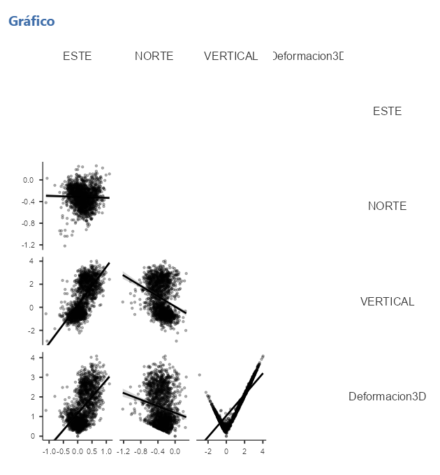

Inteligencia de Negocios — Business Intelligence
Sistema de Monitoreo Geodésico GNSS para Alerta Temprana Volcánica
Este panel analiza el Catálogo de Deformación GNSS del Instituto Geofísico del Perú (IGP) para los volcanes Ubinas y Sabancaya, con el fin de convertir años de mediciones satelitales en información útil para la prevención de desastres.
El problema
El GNSS es la técnica geodésica de referencia para registrar la deformación superficial de un volcán: un desplazamiento del terreno es, muchas veces, la señal más temprana de que el magma se está moviendo. El problema es que las estaciones que miden Ubinas y Sabancaya presentan cobertura insuficiente, periodos de interrupción y falta de protocolos estandarizados, lo que rompe la continuidad de los datos y limita a los modelos predictivos de actividad volcánica.
Sabancaya mantiene actividad eruptiva continua desde noviembre de 2016, con explosiones vulcanianas de más de 4 km de altura. Ubinas registró su ciclo eruptivo más reciente entre 2023 y 2024, con ceniza, sismicidad volcánico-tectónica y huaycos de lodo y escombros por deshielo. Sin un registro continuo, anticipar estos eventos y activar protocolos de respuesta se vuelve mucho más difícil.
Qué resolvemos con este dashboard
Este proyecto de BI transforma la base OLTP del catálogo GNSS en un Data Mart dimensional (DMGNSS) para responder preguntas como:
- Deformación vertical (cm) por provincia y año.
- Desplazamiento horizontal acumulado (Este/Norte) por volcán y mes.
- Días de interrupción de datos por estación y trimestre.
- Alertas tempranas emitidas según nivel de deformación.
- Porcentaje de disponibilidad de datos por estación.
Ciudades y comunidades sostenibles — fortalecer la alerta temprana ante erupciones.
Acción por el clima — mejorar la resiliencia ante desastres volcánicos.
Región Moquegua — Provincia General Sánchez Cerro
Volcán Ubinas
Considerado el volcán más activo del Perú. En las últimas tres décadas registró cuatro ciclos eruptivos, siendo el más reciente el ocurrido entre 2023 y 2024.
Su última fase eruptiva activa produjo caída de ceniza, sismicidad volcánico-tectónica y, por efecto de lluvias intensas y deshielo glaciar, huaycos de lodo, ceniza y escombros que afectaron a las poblaciones cercanas. La red GNSS que lo monitorea aún presenta cobertura espacial limitada y cortes en el registro, lo que dificulta anticipar con precisión sus próximas fases eruptivas.


Volcán Ubinas, Moquegua
Monitoreo geodésico
El Instituto Geofísico del Perú, a través del Centro Vulcanológico Nacional (CENVUL), mantiene una red de estaciones GNSS y sísmicas sobre el edificio volcánico de Ubinas para registrar en tiempo casi real la deformación del terreno (IGP–CENVUL, 2024). Estas mediciones se complementan con imágenes satelitales InSAR, que han permitido detectar inflación del edificio volcánico previa a episodios explosivos (INGEMMET, 2023).
Durante la crisis eruptiva 2023–2024, el nivel de alerta volcánica se elevó a naranja, y las autoridades de gestión del riesgo de desastres coordinaron evacuaciones preventivas en los centros poblados de la provincia General Sánchez Cerro (INDECI, 2023).
Ubicación del volcán
Referencias
- Instituto Geofísico del Perú – Centro Vulcanológico Nacional (IGP–CENVUL). (2024). Reporte de la actividad del volcán Ubinas. Observatorio Vulcanológico del Sur del Perú.
- Instituto Geológico, Minero y Metalúrgico (INGEMMET). (2023). Boletín de monitoreo volcánico: Ubinas. Observatorio Vulcanológico del INGEMMET (OVI).
- Instituto Nacional de Defensa Civil (INDECI). (2023). Informe de emergencia por actividad del volcán Ubinas.


Volcán Sabancaya, Arequipa
Región Arequipa — Provincia Caylloma
Volcán Sabancaya
Mantiene actividad eruptiva continua desde noviembre de 2016, generando explosiones de tipo vulcaniano con columnas de ceniza que superan los 4 km de altura.
Es monitoreado en tiempo casi real mediante sismicidad y observación visual, complementado con estaciones GNSS que registran la deformación del edificio volcánico. Sin embargo, la accesibilidad geográfica y las condiciones climáticas extremas de la Zona Volcánica Central de los Andes limitan la continuidad de los registros, dificultando la escalabilidad de modelos predictivos de actividad volcánica.
Monitoreo geodésico
Sabancaya es el volcán con mayor frecuencia de explosiones registradas en el Perú desde el inicio de su fase eruptiva actual, con un promedio de varias explosiones vulcanianas diarias reportadas por el Observatorio Vulcanológico del INGEMMET (OVI–INGEMMET, 2024). La red GNSS instalada en el complejo volcánico Ampato–Sabancaya–Hualca Hualca registra desplazamientos horizontales y verticales asociados al ascenso de magma hacia niveles someros (IGP–CENVUL, 2024).
La caída de ceniza dispersada por los vientos altoandinos afecta periódicamente a distritos de la provincia de Caylloma, lo que ha motivado protocolos de monitoreo conjunto entre el IGP, el INGEMMET y el Gobierno Regional de Arequipa para la gestión del riesgo volcánico (CENVUL, 2023).
Ubicación del volcán
Referencias
- Observatorio Vulcanológico del INGEMMET (OVI–INGEMMET). (2024). Reporte de actividad del volcán Sabancaya. Instituto Geológico, Minero y Metalúrgico.
- Instituto Geofísico del Perú – Centro Vulcanológico Nacional (IGP–CENVUL). (2024). Catálogo de deformación GNSS: complejo volcánico Ampato–Sabancaya.
- Centro Vulcanológico Nacional (CENVUL). (2023). Protocolo de gestión del riesgo volcánico – Región Arequipa. Instituto Geofísico del Perú.
Data Mart — DMGNSS
Diccionario Técnico de Datos
Catálogo de deformación GNSS de los volcanes más activos del Perú (Ubinas y Sabancaya) — Instituto Geofísico del Perú (IGP).
| Variable | Descripción | Tipo | Tamaño |
|---|---|---|---|
| FECHA_CORTE | Día en que se generó el dataset del catálogo de deformación GNSS de los volcanes más activos del Perú (Ubinas y Sabancaya). | Numérico | 8 |
| UBIGEO | Código de ubicación geográfica donde se registra la deformación GNSS de los volcanes. Catálogo de UBIGEO del INEI | Texto | 6 |
| ANIO | Año en el que se registró la deformación GNSS de los volcanes más activos del Perú. | Numérico | 4 |
| DEPARTAMENTO | Departamento al que pertenece el volcán donde se registra la deformación GNSS. Catálogo de UBIGEO del INEI | Texto | 13 |
| PROVINCIA | Provincia a la que pertenece el volcán donde se registra la deformación GNSS. Catálogo de UBIGEO del INEI | Texto | 50 |
| FECHA_UTC | Fecha en la que se registró la deformación GNSS de los volcanes, expresada en formato UTC (Tiempo Universal Coordinado). | Texto | 8 |
| ESTE | Desplazamiento de la estación GNSS en la componente horizontal Este (cm). Valores (+) indican movimiento hacia el Este y (−) hacia el Oeste; ayuda a calcular el vector de deformación horizontal de la superficie volcánica. GNSS Ubinas: lon −70.92°, lat −16.36° · GNSS Sabancaya: lon −71.85°, lat −15.73° (sin mayor precisión por seguridad de los equipos) | Numérico | 5 |
| NORTE | Desplazamiento de la estación GNSS en la componente horizontal Norte (cm). Valores (+) indican movimiento hacia el Norte y (−) hacia el Sur; junto con Este, forma el vector de desplazamiento horizontal. | Numérico | 5 |
| VERTICAL | Desplazamiento de la estación GNSS en la componente vertical (cm). Valores (+) representan inflación (levantamiento del terreno por presión magmática) y (−) deflación (hundimiento por relajación del sistema). | Numérico | 6 |
| VOLCAN | Nombre del volcán al que corresponde la deformación GNSS registrada. | Texto | 20 |
Análisis Estadístico — Software Development Metrics
Modelo Relacional
Determinar el grado de asociación entre las componentes de deformación GNSS (ESTE, NORTE, VERTICAL) y la deformación tridimensional calculada (Deformacion3D), así como caracterizar la distribución de los eventos de falla y de las alertas simuladas registradas en el sistema.
Frecuencias
Analizar la tabla de frecuencias evidencia que el evento de falla se mantiene en estado "Normal" en la totalidad de los 1770 registros, sin fallas de calibración reportadas en el periodo. Respecto al nivel de alerta simulada, observarse que predomina el nivel Baja con 1077 registros (60.8%), seguido de Media con 619 registros (35.0%) y Alta con 74 registros (4.2%), lo que indicar que la mayoría de los eventos de deformación no superan los umbrales críticos de riesgo.
| Frecuencias de Evento_Falla | |||
|---|---|---|---|
| Evento_Falla | Frecuencias | % del Total | % acumulado |
| Normal | 1770 | 100.0% | 100.0% |
| Frecuencias de Alerta_Simulada | |||
|---|---|---|---|
| Alerta_Simulada | Frecuencias | % del Total | % acumulado |
| Alta | 74 | 4.2% | 4.2% |
| Baja | 1077 | 60.8% | 65.0% |
| Media | 619 | 35.0% | 100.0% |
Matriz de correlación
Evidenciarse, en la matriz de correlación, una asociación fuerte y significativa entre VERTICAL y Deformacion3D (r = 0.867; ρ = 0.724; p < .001), así como entre ESTE y Deformacion3D (r = 0.556; ρ = 0.563; p < .001). Observarse, en cambio, que NORTE presenta una correlación débil e inversa con las demás componentes, en particular con VERTICAL (r = −0.282; p < .001) y con Deformacion3D (r = −0.170; p < .001). Esto sugerir que la componente vertical es la que más influye en el cálculo de la deformación tridimensional del terreno volcánico, mientras que el desplazamiento Norte se comporta de manera relativamente independiente. Confirmar, la matriz de gráficos de dispersión por pares, estos mismos patrones de manera visual: una nube de puntos con pendiente positiva marcada entre VERTICAL y Deformacion3D, una dispersión más difusa entre ESTE y las demás componentes, y una relación inversa apenas perceptible en los pares que involucran a NORTE.
| ESTE | NORTE | VERTICAL | Deformacion3D | ||
|---|---|---|---|---|---|
| ESTE | r de Pearson | — | |||
| Rho de Spearman | — | ||||
| NORTE | r de Pearson | −0.029 | — | ||
| Rho de Spearman | −0.112*** | — | |||
| VERTICAL | r de Pearson | 0.677*** | −0.282*** | — | |
| Rho de Spearman | 0.692*** | −0.320*** | — | ||
| Deformacion3D | r de Pearson | 0.556*** | −0.170*** | 0.867*** | — |
| Rho de Spearman | 0.563*** | −0.186*** | 0.724*** | — |
Nota. * p < .05, ** p < .01, *** p < .001
Gráfico de dispersión por pares

Matriz de gráficos de dispersión entre ESTE, NORTE, VERTICAL y Deformacion3D
Representarse gráficamente la dispersión de los pares de variables analizados con el objetivo de visualizar el comportamiento de la asociación identificada. Evidenciar, los diagramas de dispersión correspondientes a VERTICAL–Deformacion3D y ESTE–VERTICAL, una tendencia lineal ascendente, consistente con los coeficientes de correlación positivos y fuertes obtenidos previamente. Permitir este comportamiento gráfico corroborar visualmente la fuerza y dirección de la relación reportada en la matriz numérica.
Descriptivas y prueba de normalidad
Evidenciar, mediante la prueba de Shapiro–Wilk, que ninguna de las cuatro variables (ESTE, NORTE, VERTICAL, Deformacion3D) sigue una distribución normal, dado que el estadístico resulta significativo en todos los casos (p < .001), con valores W entre 0.919 y 0.995. Observarse, además, que Deformacion3D presenta la media más alta (M = 1.45; DT = 0.896) y el mayor rango de variación (entre 0.00 y 4.08) de las cuatro variables analizadas, lo que anticipar la necesidad de emplear coeficientes de correlación no paramétricos (Rho de Spearman) junto con los paramétricos (r de Pearson).
| ESTE | NORTE | VERTICAL | Deformacion3D | |
|---|---|---|---|---|
| N | 1770 | 1770 | 1770 | 1770 |
| Perdidos | 0 | 0 | 0 | 0 |
| Media | 0.175 | −0.316 | 0.769 | 1.45 |
| Mediana | 0.160 | −0.310 | 0.495 | 1.15 |
| Desviación típica | 0.294 | 0.181 | 1.44 | 0.896 |
| Mínimo | −1.11 | −1.22 | −2.93 | 0.00 |
| Máximo | 1.11 | 0.260 | 4.02 | 4.08 |
| W de Shapiro–Wilk | 0.995 | 0.992 | 0.924 | 0.919 |
| Valor p de Shapiro–Wilk | < .001 | < .001 | < .001 | < .001 |
Síntesis
Concluir, a partir del análisis relacional, que la deformación tridimensional del terreno volcánico está determinada principalmente por la componente vertical, en menor medida por la componente Este, mientras que la componente Norte aporta escasa información explicativa sobre dicha deformación. Confirmarse, asimismo, que el sistema de monitoreo GNSS mantiene una operación estable, sin fallas de calibración registradas durante el periodo, y que la mayoría de los eventos de deformación se ubican en niveles de alerta bajos, lo que sugerir un comportamiento predominantemente estable de los volcanes Ubinas y Sabancaya en el periodo analizado.
Análisis Estadístico — Software Development Metrics
Modelo Explicativo
Explicar la variación de la deformación tridimensional (Deformacion3D) en función del nivel de alerta simulada (Alta, Baja, Media), verificando previamente los supuestos de normalidad y de homogeneidad de varianzas.
ANOVA de un factor (Welch)
Mostrar, la prueba de Levene, heterogeneidad de varianzas entre los grupos de alerta simulada (F = 34.7; gl1 = 2; gl2 = 1767; p < .001), lo que justificar el uso del ANOVA de Welch en lugar del ANOVA clásico de Fisher. Revelar, el análisis de Welch, diferencias estadísticamente significativas en Deformacion3D según el nivel de alerta simulada (F = 5868; gl1 = 2; gl2 = 221; p < .001). Mostrar, las medias por grupo, que el nivel Alta concentra el valor promedio más alto (M = 3.34; DT = 0.227), seguido de Media (M = 2.34; DT = 0.408) y de Baja, que registra el promedio más bajo (M = 0.816; DT = 0.343).
| ANOVA de Un Factor (Welch) | |||
|---|---|---|---|
| F | gl1 / gl2 | p | |
| Deformacion3D | 5868 | 2 / 221 | < .001 |
| Descriptivas de grupo — Deformacion3D | ||||
|---|---|---|---|---|
| Alerta_Simulada | N | Media | DT | EE |
| Alta | 74 | 3.340 | 0.227 | 0.0263 |
| Baja | 1077 | 0.816 | 0.343 | 0.0104 |
| Media | 619 | 2.339 | 0.408 | 0.0164 |
| Comprobación de supuestos — Deformacion3D | ||
|---|---|---|
| Prueba | Estadístico | p |
| Shapiro–Wilk (normalidad) | W = 0.986 | < .001 |
| Levene (homogeneidad de varianzas) | F = 34.7 (gl1=2, gl2=1767) | < .001 |
Media de Deformacion3D por nivel de Alerta_Simulada (IC 95%)
Representarse gráficamente el comportamiento de la variable Deformacion3D según el nivel de Alerta_Simulada con el fin de ilustrar la magnitud de la diferencia hallada. Evidenciar el gráfico una clara separación entre las medias de los tres grupos, sin superposición de sus intervalos de confianza al 95%, lo que reforzar visualmente la significancia estadística reportada en el análisis de varianza.
Pruebas post hoc
Confirmar, las pruebas post hoc de Games–Howell, que todas las diferencias entre pares de grupos son estadísticamente significativas (p < .001 en los tres contrastes), siendo la mayor diferencia la que se observa entre los niveles Alta y Baja (diferencia de medias = 2.52), seguida de la diferencia entre Alta y Media (diferencia de medias = 1.00) y, con menor magnitud, entre Baja y Media (diferencia de medias = −1.52).
| Prueba Post-Hoc de Games–Howell — Deformacion3D | ||
|---|---|---|
| Baja | Media | |
| Alta — Diferencia de medias | 2.52 | 1.00 |
| Alta — p-valor | < .001 | < .001 |
| Baja — Diferencia de medias | −1.52 | |
| Baja — p-valor | < .001 | |
Síntesis
Concluir, a partir del análisis explicativo, que el nivel de alerta simulada constituye un factor que explica de manera significativa las variaciones en la deformación tridimensional del terreno volcánico, con diferencias de medias considerables y estadísticamente significativas entre los tres niveles evaluados. Evidenciar, las pruebas post hoc, que dicha diferenciación es más marcada entre los niveles Alta y Baja, lo que reforzar la validez del sistema de alertas simuladas como indicador temprano de cambios relevantes en la actividad volcánica de Ubinas y Sabancaya.